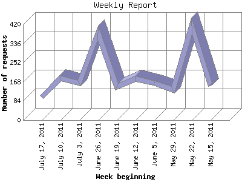

The Weekly Report identifies the activity for each week within the report
time frame. Remember that one page hit can result in several server requests
as the images for each page are loaded.
Note: Depending on the
report time frame for this report the first and last week may not represent
a full seven day week, resulting in lower hits.

| Week beginning | Number of requests | Number of page requests | |
|---|---|---|---|
| 1. | May 15, 2011 | 151 | 25 |
| 2. | May 22, 2011 | 413 | 95 |
| 3. | May 29, 2011 | 132 | 53 |
| 4. | June 5, 2011 | 162 | 45 |
| 5. | June 12, 2011 | 180 | 64 |
| 6. | June 19, 2011 | 145 | 64 |
| 7. | June 26, 2011 | 382 | 85 |
| 8. | July 3, 2011 | 162 | 58 |
| 9. | July 10, 2011 | 183 | 70 |
| 10. | July 17, 2011 | 102 | 59 |
Most active week beginning May 22, 2011 : 95 pages sent. 413 requests handled.
Weekly average: 61 pages sent. 201 requests handled.
This report was generated on July 24, 2011 15:27.
Report time frame May 20, 2011 01:26 to July 23, 2011 21:33.
| Web statistics report produced by: analog 6.0 / Report Magic 2.21 |